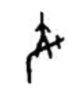
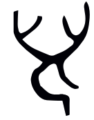
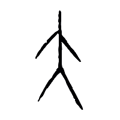
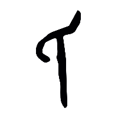
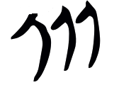
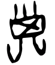
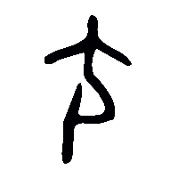
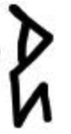

تعلّم الأحرف الصينية من خلال القصص
بدأت الأحرف الصينية كصور. تتبّع كل رسم إلى الشيء الذي كان يصوّره — شمس، خروف، قارب — ويصبح تعلّم الصينية أقل شبَهًا بحفظ الضربات.
لماذا نتعلّم الصينية عبر القصص؟
يصبح الحرف أسهل في التذكّر حين ترى الصورة والفكرة الكامنة خلفها. المكتبة أدناه تضم 270 صورة رمزية.
ابدأ بالصور
الصور الرمزية هي أقدم طبقة في الكتابة الصينية: رسم مباشر للعالم من حولنا.
تابع التطور
انظر كيف تبسّط رسم قديم إلى الشكل الذي تقرأه وتكتبه اليوم.
ابنِ معاني مترابطة
الصورة الواحدة تشرح مركّبات كثيرة. تعلّم 羊 مرة واحدة، وتصبح الأحرف المبنية منها مفهومة.
استكشف 270 صورة رمزية صينية
كل حرف في قاعدة البيانات الذي وُسم شرحه بـ 象形 (صورة رمزية)، مجمّع في 12 موضوعًا. كل بطاقة ستفتح قصة حرف. الروابط مؤقتة إلى حين كتابة القصص الفردية.


النباتات والأشجار والزراعة 22


الحيوانات والطيور 39


جسم الإنسان وحواسه 31


الناس والعائلة والأوضاع 39
 父
父
 尹
尹
 夬
夬

奇 入 何
何
 匕
北
匕
北

兒 卩
卩
 厃
厃
 黑
黑

大 夭
夭
 交
交
 亢
亢
 奚
奚
 女
女
 母
母
 姦
姦

氏 化
化
 疑
疑
 釁
釁

乑
㜽 禸
禸

尢
巴 臽 疌 丮 叚
寽
叚
寽
 乇
乇
 文
文
 主
主
الأدوات والأسلحة والحرف 36


الأوعية والحاويات والحُلي 34


الأفعال والحركة 5


كيف تقرأ قصة حرف
روتين بسيط لتعلّم الأحرف الصينية دون نسخ آلي.
انظر إلى أقدم شكل
ابدأ بشكل العظام التنبؤية أو البرونزي: أي شيء يرسمه؟
اربط الصورة بالمعنى
اسأل ما الذي تشير إليه الصورة — قرن، قدم، تموج — وكيف نمى هذا المعنى.
اقرأه في كلمة
أنهِ بالبينيين وكلمة حقيقية، لتصبح القصة مفردات قابلة للاستخدام.
تعلّم الصينية: إجابات سريعة
هل كل الأحرف الصينية صور رمزية؟
لا. الصور الرمزية هي أقدم طبقة. كثير من الأحرف اللاحقة تجمع بين جزء للمعنى وجزء للصوت، ومعرفة الصور الرمزية تجعل هذه التراكيب أسهل بكثير.
هل عليّ معرفة كتابة العظام التنبؤية؟
لا. الأشكال القديمة تُستخدم هنا كاختصار لفهم الأحرف الحديثة، لا كنظام كتابة منفصل يجب حفظه.
من أين أبدأ؟
ابدأ بـ 日 و 人 و 口 و 木 و 羊 — أحرف جيدة للبداية — ثم تابع الأحرف ذات الصلة في كل قصة.